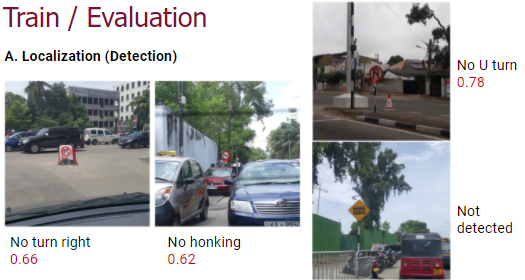

Dilshani Karunarathna
Dilshani Karunarathna
Traffic Sign Net
Road signs are used as a means of alerting and guiding drivers and helping to regulate traffic between vehicles, pedestrians, motorcycles, bicycles and passers-by on the streets, highways and other roads.
All road traffic signs, construction signs, and parking lot signs are intended to convey a clear simple message of instructions or information to road users. The sign should always be focused enough to give the driver enough time to respond to the command.
So this system detects sign from the images to locate exactly traffic sign regions, and classifies each traffic sign into a corresponding class.
Team
Dilshani Karunarathna
 Suneth Samarasinghe
Suneth Samarasinghe
 Pubudu Premathilake
Pubudu Premathilake
 Wishma Herath
Wishma Herath